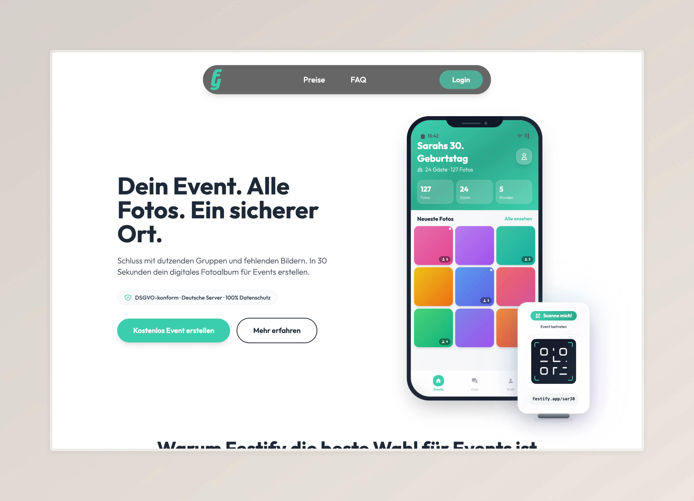

Festify – laufendes Projekt

"Wie hält man die Erinnerungen an einen tollen Abend sicher fest?"
Auf Events entstehen hunderte Fotos, doch sie verschwinden in unübersichtlichen WhatsApp-Gruppen oder bleiben auf privaten Geräten isoliert. Der Gastgeber hat Mühe, sie zu sammeln, und es fehlt der emotionale Rückblick.
Wie man das löst? Eine "Zero-Friction" PWA (Progressive Web App), die den Prozess des Sammelns und Teilens automatisiert. Kein Download, kein Login-Zwang, aber volle Privatsphäre.
Festify. Ein digitaler Begleiter, der im Hintergrund agiert, alle Perspektiven bündelt und am nächsten Tag automatisch eine gemeinsame "Story of the Night" erzählt.
Die Recherche
User Research als Fundament für datenbasiertes Design
Der Status Quo
Event-Fotos sind heute oft überall, aber nirgendwo wirklich gut aufgehoben. Was passiert mit den hunderten Bildern nach einem Event?
Unsere Umfrage unter Teilnehmern bestätigte das Problem:
Für die Mehrheit "vergammeln" Event-Fotos ungenutzt in der Galerie oder gehen in chaotischen WhatsApp-Gruppen unter. Bestehende Cloud-Lösungen wie Dropbox werden als zu umständlich empfunden. Es gibt zwar extra Cloud-Lösungen wie Events, diese haben – laut unseren Recherchen – allerdings kaum hilfreiche Funktionen.
User Pain Points
Die Befragung offenbarte klare Prioritäten und Schmerzpunkte der Nutzerinnen und Nutzer:
Das wichtigste Ergebnis: Einfachheit ist King.
Die Befragten gaben an, dass sie eine App nur nutzen würden, wenn sie keinen Speicherplatz frisst und extrem schnell zu bedienen ist. Datenschutz war zudem ein schwieriger Punkt.
Die häufigsten Probleme:
- — Fotos verschwinden in verschiedenen Chats und Clouds
- — Bestehende Lösungen sind zu kompliziert oder bieten zu wenig
- — Bedenken bezüglich Datenschutz und Privatsphäre
- — Zeitaufwand für Organisation und Teilen ist zu hoch
Die User Journey: Analog trifft Digital
Der "Phygital"-Ansatz als Schlüssel zur Akzeptanz der Nutzerinnen und Nutzer
Der Einstieg
Eine große Hürde für Event-Apps? Der Download. Niemand möchte für ein einmaliges Event extra eine App installieren, die danach nur Speicherplatz frisst.
Unsere Lösung: Der analoge Start
Um die Hürde "App-Download" zu eliminieren, beginnt die Experience analog. Ein persönlicher Einladungsbrief mit QR-Code onboarded die Gäste, noch bevor das Event startet. Das klärt auch die Datenschutz-Frage proaktiv.
Diese Version war v.A. auf Hochzeiten ausgelegt. Der Fokus hat sich durch die Umfrage verschoben.
Warum das funktioniert:
- — Persönlich & Einladend: Ein physischer Brief schafft Vorfreude und wirkt weniger technisch
- — Transparenz von Anfang an: Datenschutz-Infos sind direkt im Brief integriert
- — Keine Download-Barriere: QR-Code führt direkt zur Web-App – kein App Store nötig
- — Event-Gefühl: Verbindet digitale Convenience mit analoger Wertschätzung

Design & Prototyping
Von User Research zu High-Fidelity Screens
From Wireframe to Code
Nach der Validierung durch User Research ging es an die konkrete Gestaltung. Wie sieht eine App aus, die wirklich "simpel" zu bedienen ist?
Design-Prinzipien – Ableitung aus der Research
Basierend auf den Umfrage-Ergebnissen entstand der High-Fidelity Prototyp in Figma. Der Fokus lag auf einem einfach zu bedienenden Interface, welches kaum Zeit benötigt, um verstanden zu werden.
Key Design Decisions:
- — Minimalistische UI: Nur das Wichtigste ist sichtbar – keine ablenkenden Features
- — Progressive Web App: Kein Download nötig, funktioniert direkt im Browser
Proof of Concept
Design ist erst der Anfang. Um das Konzept wirklich zu validieren, musste es funktionieren.
Von Figma zur funktionierenden Software
Aktuell setzen wir das Design in einer funktionierenden Software-Version um. Die Kernfunktionen wie Bilder hochladen, Gallerie-Ansicht und sogar die Gesichtserkennung sind bereits live und werden kontinuierlich verbessert und getestet.
Tech Stack:
High-Fidelity Screens

Galerie
